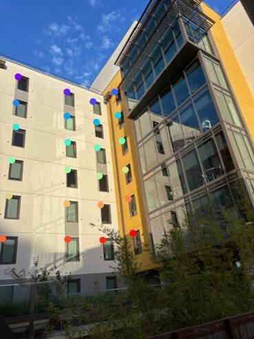

CS 180 Project 4: (Auto)stitching and Photo Mosaics
In this project, I stitched together and rectified some images.
Part 0: Shoot & Digitize Images
I collected a ton of images of the past week for this project, here are the ones I ended up using.
In order to make images work well with the mosaic, I made sure to keep the center of projection as constant as possible. I also tried to find interesting geometries that would make finding corresponding points simple.
In order to make images work well with rectfication, I made sure to have images that have a distinct rectangular shape in them.
Part 1: Recover Homographies
In order to recover the homographies, I set up an equation to solve for the 8 unknown variables in our transformation matrix, H.
I used np.linalg.lstsq in order to solve the system, since I tended to use more than the minimum 4 correspondances, so I had an overdetermined system.
Part 2: Warp the Images
Then, I implemented the warpImage function. First, I computed the output shape of the resulting image by figuring out what coordinates the orignal corners of the image mapped to by transforming the points with the transformation matrix H.
Once this shape was established, I figured out how to offset the warped image to make it fit in the frame.
Then, I used inverse warping in conjuction with scipy.interpolate.griddata to fill in the image. I used nearest interpolation.
Finally, I went back in and blacked out the pixels which were filled based on nearest pixel, but were actually not present in the orignal image.
All together, this is an example of a warped image of Blackwell residence hall. I did it in both directions.
|
 |
|
 |
Part 5: Mosaic
Finally, I figured out how to combine together images into image mosaics. In order to do this, I took a one-shot approach.
First, I warped one of the images to match the shape of the other image.
Then, I computed the desired output shape by seeing how far off the reference points were from the sides in the warped image and the reference image.
Next, I filled in the appropriate parts of the output image with both the warped image and the reference image. Here are my three example mosaics!